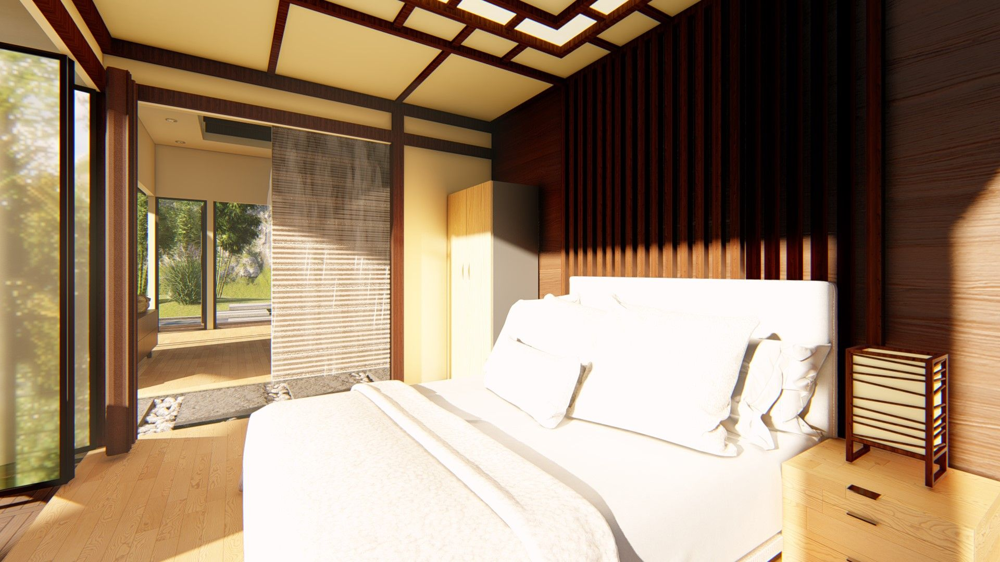
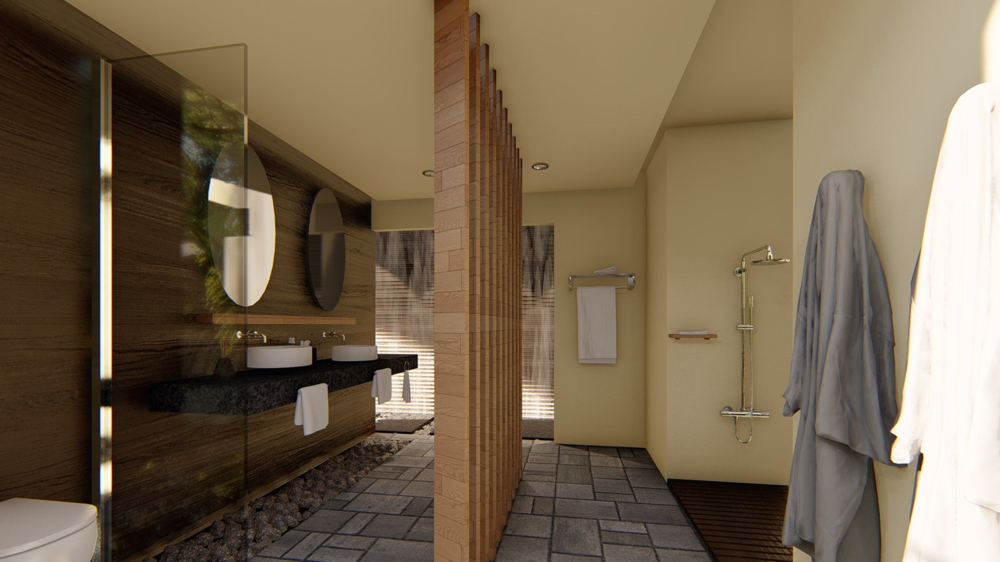
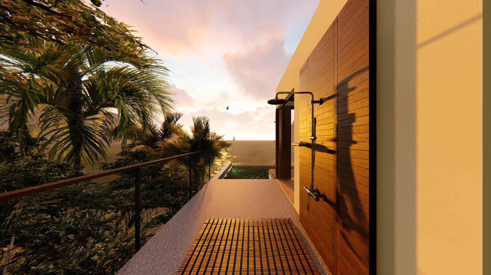
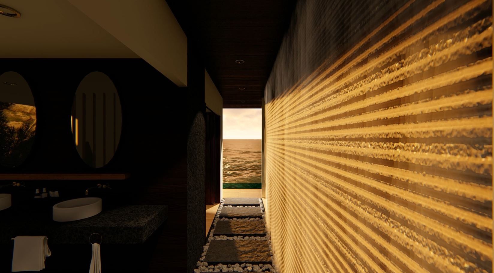
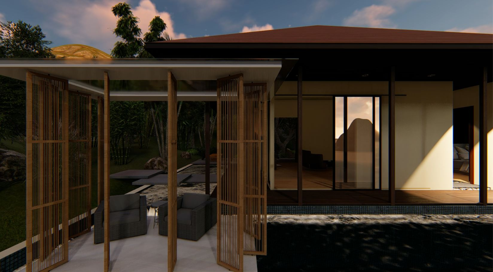
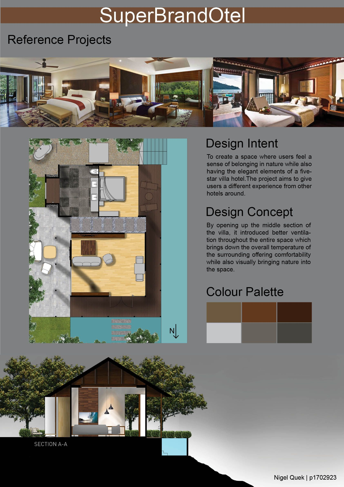
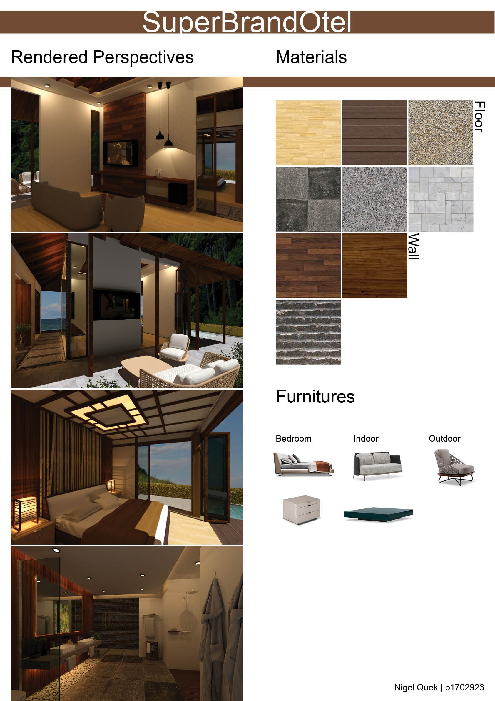

Superbrandotel
Brief
To design a five-star hotel villa scheme using branded furniture with coherent and matching styles and aesthetics. The villa required distinct living/dining, lounge, sleep, and wet areas furnished with luxury brand pieces.
Design Intent
To create a space where users feel a sense of belonging and closer to nature while also having the elegant elements of a five-star villa. The central section of the villa was opened up to improve air circulation, naturally cooling the interior while visually connecting the space to the outdoors.

Living room

Bedroom

Bathroom

Outdoor shower

Feature wall

Cabana


Presentation boards